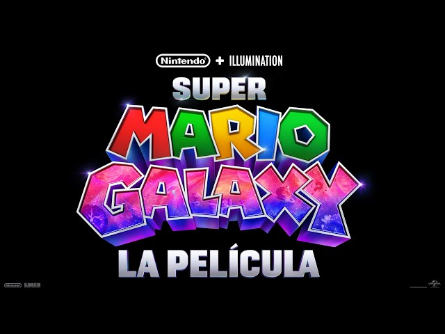

Directores Aaron Horvath y Michael Jelenic Elenco Chris Pratt, Anya Taylor-Joy, Charlie Day, Jack Black, Brie Larson Donald Glover, Benny Safdie, Keegan-Michael Key, Kevin Michael Richardson Sinopsis La pelicula tiene lugar despues de los acontecimientos de la primera, en la que dos hermanos, Mario y Luigi, y la princesa Peach emprenden una aventura hasta los confines del espacio y a traves de la galaxia.
|
Duración 1h 39mFecha de Lanzamiento 2 de abril de 2026 Animada
Acción
|


Super Mario Galaxy: la pelicula, (titulo original en ingles The Super Mario Galaxy Movie) es una pelicula de accion, aventura y comedia animada por ordenador basada en la franquicia de videojuegos Mario de Nitendo. Producida por Illumination y Nintendo, y distribuida por Universal Pictures, es la secuela de Super Mario Bros: La pelicula (2023) y lleva el nombre del videojuego Super Mario Galaxy (2007).
El presidente de Nintendo, Shuntaro Furukama, declaró en mayo de 2021 que Nintendo estaba interesada en producir más películas animadas basadas en sus propiedades si la película de Mario, entonces sin título, resultaba exitosa. Se le preguntó al director ejecutivo y productor de Illumination, Chris Meledandri, sobre la posibilidad de una secuela de The Super Mario Bros. Movie antes del estreno de la película en abril de 2023. Tras su éxito en taquilla, se anunció en marzo de 2024 que Illumination estaba desarrollando una nueva película animada de Mario, con Horvath y Jelenic de regreso como directores y Fogel como guionista. Se inspira en videojuegos de Mario como Super Mario Galaxy (2007) y Super Mario Galaxy 2 (2010), entre otros juegos de Nintendo como la serie Star Fox, e incorpora elementos de numerosos juegos anteriores de Mario.
En mayo de 2021, el presidente de Nitendo, Shuntaro Furukama, afirmó que Nintendo estaba interesada en producir más películas de animación basadas en sus propiedades intelectuales si Super Mario Bros: la película. En un artículo de portada de Variety antes del estreno de la película, se le preguntó al director ejecutivo y productor de Illumination, Chris Meledandri, sobre posibles secuelas o proyectos adaptados de otras propiedades de Nintendo, y respondió: «En este momento, nuestra atención se centra por completo en llevar la película al público, y por ahora, no estamos preparados para hablar de lo que vendrá en el futuro». La escena posterior a los créditos de la película insinúa una posible secuela protagonizada por Yoshi. Jack Black ha expresado su interés en que Pedro Pascal sea elegido para poner voz a Wario en la futura pelicula.
En abril de 2023, tras el éxito de taquilla de la película, Nintendo declaró que habría más películas basadas en sus propiedades, aunque no confirmaron directamente una secuela de Super Mario Bros.: la película. En junio de 2023, Chris Pratt dijo que «pronto» se anunciaría una secuela, pero con la salvedad de que la huelga del Sindicato de Guionistas de América de 2023 afectaría a la producción.En diciembre de 2023, Black expresó su interés en que la secuela fuera un musical titulado Bowser's Revenge. En marzo de 2024, durante una presentación del Mario Day, Meledandri y el creador de la serie, Shigeru Miyamoto, confirmaron oficialmente el desarrollo de «una nueva Super Mario Bros.: la película», con Aaron Horvath Michael Jelenic de nuevo como directores y Matthew Fogel también de vuelta para escribir el guion. Meledandri declaró que el equipo de Illumination estaba trabajando en el storyboard y «desarrollando diseños de decorados para nuevos entornos». En octubre, Keegan-Michael Key adelantó que la secuela tendría «un alcance más amplio» y contaría con «personajes nuevos y viejos favoritos, además de algunos personajes que [él considera] realmente profundos». El productor Chris Meledandri afirmó que, aunque los juegos Super Mario Galaxy fueron la principal fuente de inspiración de la película, esta incluiría además «sorpresas para los fans de todas las épocas de Mario».
Similar a su predecesora, la película fue animada por Illumination Studios Paris en Paris, Francia. La producción estaba en marcha en marzo de 2024, la animación finalizó en noviembre de 2025. En enero de 2026, Meledandri confirmó que la animación se había completado y que había comenzado la posproducción.
El 12 de septiembre de 2025, se informó que Brian Tyler, quien compuso la banda sonora de The Super Mario Bros. Movie, regresaría para componer la banda sonora de la secuela. Según Tyler, compuso varias piezas de la banda sonora de la película desde el hospital sin avisar al personal. a banda sonora es interpretada por una orquesta de 70 músicos y presenta arreglos de temas de los dos juegos de Super Mario Galaxy y otras entregas de la serie Super Mario . La banda sonora fue lanzada por Back Lot Music e iam8bit el 1 de abril de 2026, coincidiendo con el estreno en cines de la película.
El tráiler oficial de Super Mario Galaxy: la película se estrenó el 12 de noviembre de 2025 en una presentación de Nintendo Direct. El 25 de enero de 2026 se estrenó otra presentación de Nintendo Direct centrada en Yoshi. Por último, el 9 de marzo del 2026 se hizo un último tráiler, donde se reveló la presencia de Wart y algunos puntos claves para la trama.
Hasta el 23 de mayo de 2026, Super Mario Galaxy: la película había recaudado 421,1 millones de dólares en Estados Unidos y Canadá, y 550,0 millones de dólares en otros territorios, para un total mundial de 971,1 millones de dólares. Producida con un presupuesto de 110 millones de dólares, la película es actualmente la primera pelicula mas taquillera de 2026 y la película de animación más taquillera del año . La película también estableció el récord del mayor estreno mundial en taquilla en 2026, la única franquicia de películas de animación con dos películas estrenadas con más de 350 millones de dólares a nivel mundial, el quinto mayor estreno mundial para una película de animación de todos los tiempos, el segundo mayor estreno mundial para una película de Illumination, el segundo mayor estreno para una película basada en un videojuego y el cuarto mayor estreno de tres días de Pascua de todos los tiempos.
La película de Super Mario Galaxy recaudó 34 millones de dólares en su primer día, superando los 31,7 millones de su predecesor, y ganó un total de 122,1 millones de dólares en todo el mundo durante sus dos primeros días de estreno. Con un estreno de tres días de 131,7 millones de dólares. La película se convirtió en el cuarto mayor estreno de tres días de Pascua de todos los tiempos, detrás de The Super Mario Bros. Movie ($146.4 millones de dólares), Furious 7 ($147.8 millones de dólares), y Batman v Superman: Dawn of Justice ($166 millones de dólares).
La película terminó debutando con 190,8 millones de dólares. obteniendo el cuarto mejor estreno de cinco días en la región, detrás de Moana 2 (225,4 millones de dólares en 2024). La película de Super Mario Bros. ($204,6 millones de dólares en 2023), y transformers: la venganza de los caidos ($20 millones de dólares en 2009). La película ha obtenido la mayor recaudación en taquilla de un lunes de 2026, con 16,8 millones de dólares. En su segundo fin de semana, la película mantuvo el primer puesto en taquilla y recaudó 68 millones de dólares, una disminución del 49 %.
En su fin de semana de estreno en 80 mercados, la película recaudó 182,4 millones de dólares, para un debut mundial de 372,6 millones de dólares.
Las fuentes describieron la respuesta de la crítica como mixta o negativa. En el sitio web agregador de resenas Rotten Tomatoes, el 42% de las reseñas son positivas, con una puntuación promedio de 5.2/10 basada en 215 reseñas. El consenso del sitio web dice: "Repleta de una colorida construcción de mundo que es tan frenética como ingrávida, las imágenes de The Super Mario Galaxy Movie son a menudo de otro mundo, pero la historia raída finalmente pierde su Vía Láctea". Metacritic, que utiliza un, asignó a la película una puntuación de 37 sobre 100, basada en 45 críticos, lo que indica reseñas "generalmente desfavorables". El público encuestado por CinemaScore le dio a la película una calificación promedio de "A−" en una escala de A+ a F, por debajo de la "A" de la primera película, mientras que los encuestados por PostTrak dijeron que el 79% del público le dio a la película una crítica positiva, y el 62% dijo que "definitivamente la recomendaría".
El lenguaje visual está divorciado de la realidad y hace referencia a los juegos; Incluso la acción de Looney Tunes está basada en el mundo real, para así subvertirlo mejor." Tara Brady de The Irish Times. dijo: "La dinámica entre Bowser y su hijo, y la hermandad al estilo de Frozen entre Peach y Rosalina, se desechan tan rápido como se introducen. Las subtramas quedan a medio desarrollar. Las nuevas incorporaciones, especialmente el inexplicablemente subutilizado Fox McCloud de Glen Powell, apenas se notan. La abrupta conclusión se siente como un abandono. Al menos es corta.
Haz clic en la imágenes:


2026 Cinedot Todos los derechos reservados. |
|